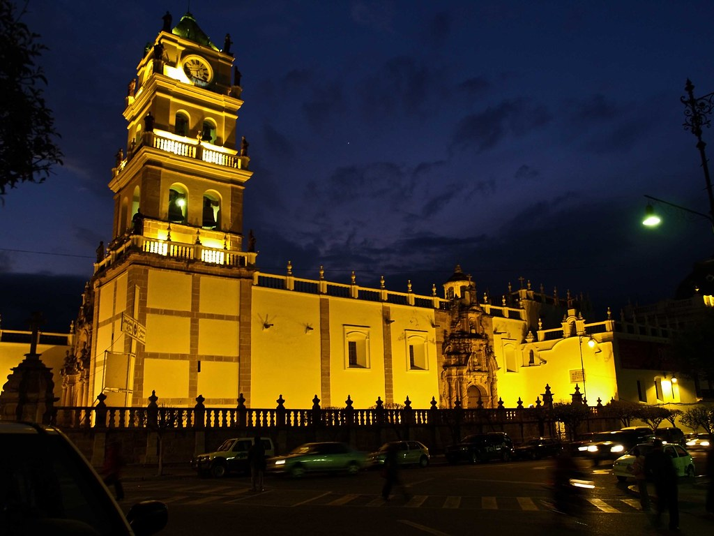

Mi ciudad: Sucre
Ciudad: Sucre, Bolivia
Sucre es una ciudad ubicada en el sur de Bolivia y es conocida por su gran importancia histórica y cultural. Es la capital constitucional del país y se caracteriza por conservar una arquitectura colonial que le da una identidad muy particular. Sus calles, plazas, iglesias y edificios históricos forman parte de un patrimonio que refleja diferentes etapas de la historia boliviana.
Uno de los lugares más representativos de la ciudad es la Plaza 25 de Mayo, que se encuentra en el centro histórico. Alrededor de ella existen importantes edificios y espacios que forman parte de la vida cultural y social de Sucre. La ciudad también es reconocida por sus construcciones de color blanco, por lo que muchas veces recibe el nombre de “Ciudad Blanca”.

Sucre tiene además una importante relación con la historia de Bolivia, ya que en esta ciudad se desarrollaron acontecimientos relacionados con la independencia del país. Por esta razón, es un lugar de gran valor histórico y cultural.
Además de su historia y arquitectura, Sucre cuenta con una gran riqueza cultural. Sus tradiciones, música, gastronomía y celebraciones forman parte de la identidad de sus habitantes. La ciudad también es conocida por sus universidades y por ser un importante centro educativo y cultural.
Para mí, Sucre no es solamente el lugar donde nací, sino también una ciudad que forma parte de mi identidad y de mis experiencias. Sus calles, lugares y costumbres hacen que sea un lugar especial y representativo.